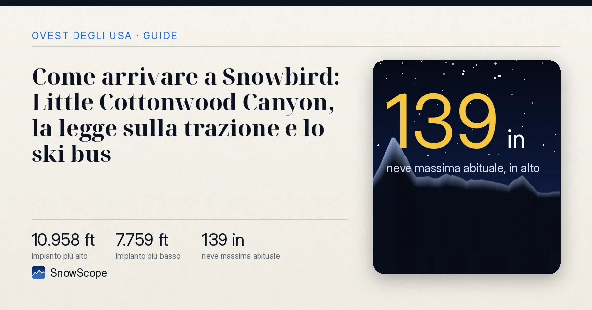
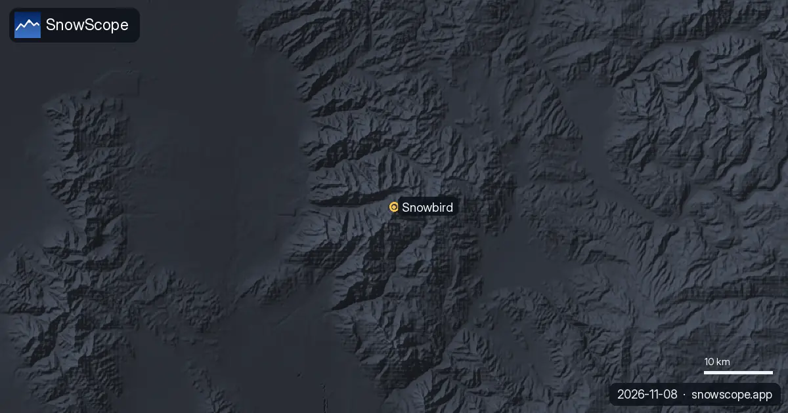

Come arrivare a Snowbird: Little Cottonwood Canyon, la legge sulla trazione e lo ski bus
Snowbird sorge da solo in cima a Little Cottonwood Canyon (SR-210), che condivide con Alta. L'unica strada del canyon è veloce nei giorni sereni e lenta quando arrivano le tempeste, quindi i tuoi pneumatici, l'ora di partenza e le previsioni meteo determinano il tuo viaggio più della distanza.
Le previsioni neve in tempo reale per Snowbird nell'app SnowScopeAltezza neve, allerte powder e mappa 3D, gratis.

Dov'è Snowbird
Snowbird si trova a circa 47 km a sud-sudest dall'aeroporto internazionale di Salt Lake City e a 39 km dal centro. L'ingresso del canyon inizia vicino a Sandy, a 6 km a ovest. Una volta entrato nel canyon su SR-210, c'è una sola strada per entrare e uscire, quindi l'UDOT avverte i conducenti che la strada è senza uscita in inverno. Porta rifornimenti e carburante per la giornata se guidi.
La salita dal fondo del canyon alla stazione è ripida: circa 488 m in questi ultimi chilometri. Il tempo di percorrenza dipende dalle condizioni meteorologiche e dal traffico, non solo dalla distanza.

L'obbligo di pneumatici invernali: quando si applica e quali pneumatici ti servono
Quando i fari lampeggianti dell'UDOT sono attivi agli ingressi del canyon, l'obbligo di pneumatici invernali entra in vigore sia su SR-210 che su SR-190. L'UDOT può farlo rispettare fino a 24 ore prima dell'arrivo di una tempesta. Tutti gli pneumatici devono avere almeno 4 mm di battistrada.
Se la tua auto ha trazione integrale o anteriore, hai bisogno di pneumatici invernali (certificazione M+S) su tutte e quattro le ruote. Se è a trazione posteriore, devi montare pneumatici invernali (simbolo 3PMSF) su tutte e quattro le ruote, oppure portare catene o calzette da neve per due ruote motrici. Le auto a noleggio da Salt Lake City spesso hanno pneumatici quattro stagioni: controlla la certificazione prima di prenotare, oppure scegli l'autobus.
Salta l'auto: autobus UTA linea 994 e Canyon Service
La linea 994 dell'UTA e il Canyon Service gestiscono autobus diretti su Little Cottonwood Canyon fino a Snowbird e Alta. L'orario dell'autobus per gli sciatori di solito va da inizio dicembre a metà aprile. Se le stazioni aprono prima nella stagione, l'UTA potrebbe avviare gli autobus prima. Usa l'app Transit o visita il sito dell'UTA per controllare l'orario prima di partire.
In una mattina di neve fresca l'autobus risolve due problemi: eviti la coda al parcheggio e ti risparmi lo stress di guidare solo nel traffico di tempesta. L'autobus parte dalla stazione del centro di Salt Lake City e dall'aeroporto.
Prima di partire: controlla lo stato della strada
L'UDOT pubblica un flusso di stato dal vivo per SR-190 e SR-210 che elenca chiusure, norme sugli pneumatici e link alle telecamere stradali. Se non appare nessun avviso, le strade sono aperte senza restrizioni previste. Controlla il flusso prima di partire da Salt Lake City e controllalo di nuovo prima di scendere nel pomeriggio.
L'unica strada del canyon si riempie velocemente con neve abbondante. Partire presto in un giorno di tempesta non è solo una questione di comfort: è una questione di non rimanere bloccato o in ritardo per ore.
Perché il canyon ripaga lo sforzo
La ricompensa per guidare o prendere l'autobus su Little Cottonwood Canyon è la profondità della neve. A metà montagna, intorno a 2.852 m, la profondità tipica della neve nei passati inverni era 244 cm. La base si trova più in basso, a 2.365 m, dove il picco tipico era 133 cm. La neve rimane al suolo per circa 220 giorni ogni inverno a metà montagna, di solito più profonda a marzo.
Lo scorso inverno (2025-26) è stato secco: il picco a metà montagna ha raggiunto solo 143 cm. Ma in un inverno normale, il canyon cattura le tempeste del Pacifico e mantiene la neve alta. Il guadagno di quota mentre sali conta—i pendii superiori a 3.340 m vedono un picco tipico di 352 cm.
Consigli per sciatori
- Controlla il flusso di stato Cottonwood Canyons dell'UDOT sul tuo telefono prima di salire e prima di scendere. Un flusso dal vivo vale più di una previsione.
- Gli pneumatici contano più della trazione integrale. La trazione posteriore con pneumatici invernali batte la trazione integrale con pneumatici quattro stagioni quando le norme sui pneumatici si applicano.
- In una mattina di neve fresca o con neve abbondante, prendi l'autobus. Arriverai più calmo, parcheggerai più facilmente e aiuterai la strada del canyon a scorrere più veloce.
- Parti dalla valle presto in un giorno di tempesta. L'unica strada del canyon diventa lenta entro un'ora da neve abbondante.
- Se vai nel backcountry dal canyon, controlla prima il bollettino dell'Utah Avalanche Center.
Su questi numeri
Le altezze neve delle località sono la neve più alta sui pendii superiori alla data indicata; sono stime per un'area, non una misura in un punto. Le previsioni possono cambiare. Leggi sempre il bollettino valanghe ufficiale prima del fuoripista.
Bollettini valanghe ufficiali: Utah Avalanche Center
Cita questo articolo
Per ricerca, didattica o stampa: numeri e grafici sono liberamente riutilizzabili con licenza CC BY 4.0 citando così.
SnowScope (2026), Come arrivare a Snowbird: Little Cottonwood Canyon, la legge sulla trazione e lo ski bus, https://snowscope.app/blog/it/2026/11/how-to-get-to-snowbird-little-cottonwood-canyon.html, consultato il 2026-11-09
SnowScope (Atlas Labs). (2026, November 9). Come arrivare a Snowbird: Little Cottonwood Canyon, la legge sulla trazione e lo ski bus. SnowScope snow reports. https://snowscope.app/blog/it/2026/11/how-to-get-to-snowbird-little-cottonwood-canyon.html
BibTeX
@misc{snowscope2026howtogettosnowbirdlittle,
author = {{SnowScope (Atlas Labs)}},
title = {Come arrivare a Snowbird: Little Cottonwood Canyon, la legge sulla trazione e lo ski bus},
year = {2026},
month = nov,
howpublished = {\url{https://snowscope.app/blog/it/2026/11/how-to-get-to-snowbird-little-cottonwood-canyon.html}},
note = {Published 2026-11-09 18:47 UTC; accessed 2026-11-09}
}· CC BY 4.0 · Metodi, dati e strumenti →
Snowbird: neve e temperatura per quota, quest'inverno vs lo scorso (strumenti) →
Segui Snowbird
Gratis: un messaggio quando arriva la neve e il meteo ogni mattina.
Altri bollettini neve

Mt Baker, Washington: circa 133 in (337 cm) di picco abituale a metà montagna in 46 inverni passati, un record mondiale di neve, nessun alloggio in quota.

Pianifica Mammoth Mountain per stagione: circa 93 in (235 cm) di picco abituale a metà montagna in 46 inverni passati, marzo il più nevoso, primavere lunghe, inverni variabili.

Jackson Hole mantiene neve profonda fino a primavera inoltrata sulle sue vette. Abbiamo controllato sei credenze comuni rispetto a 46 anni di storia nivale. Dati da novembre 2026.